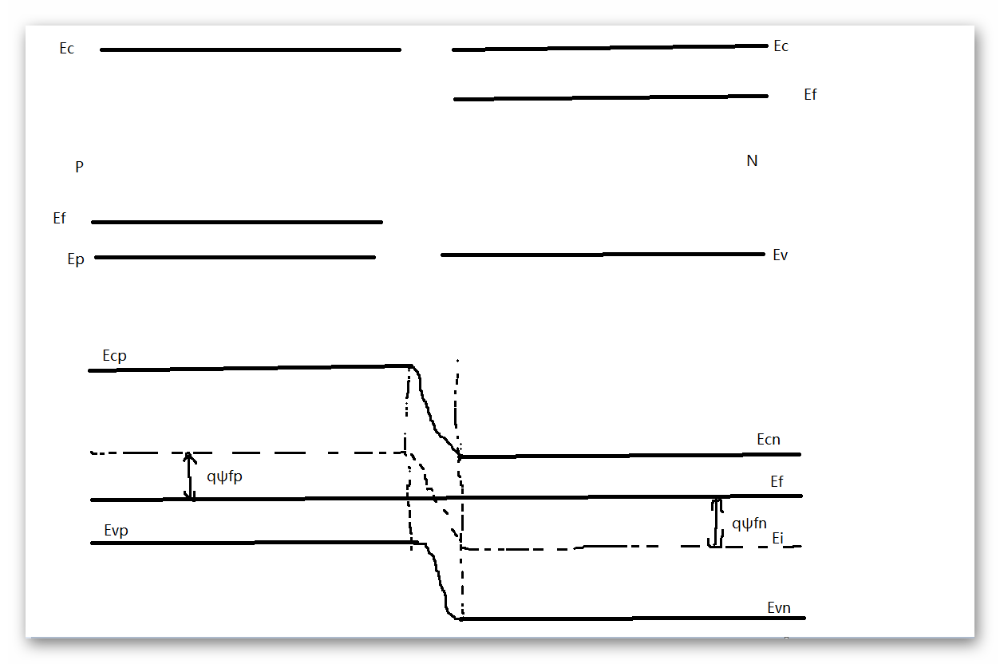
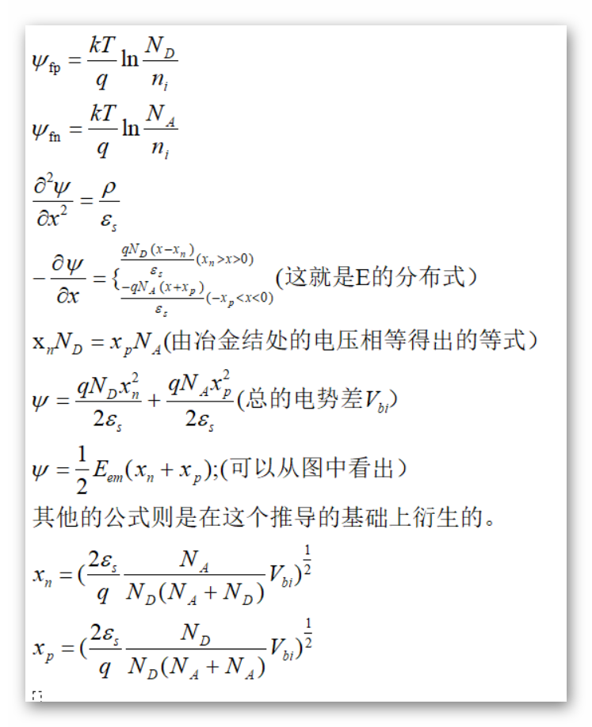
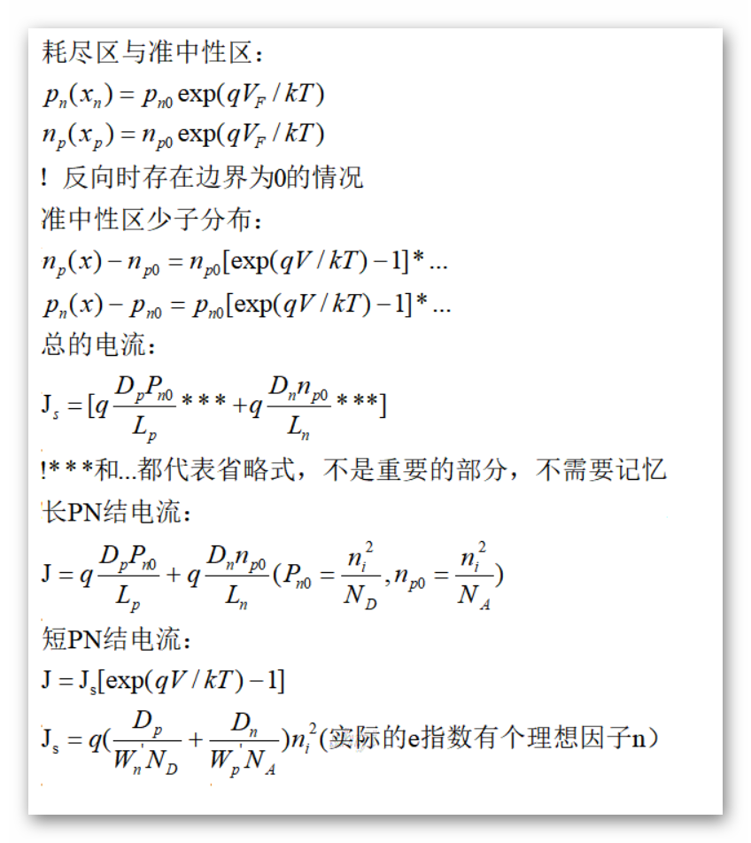
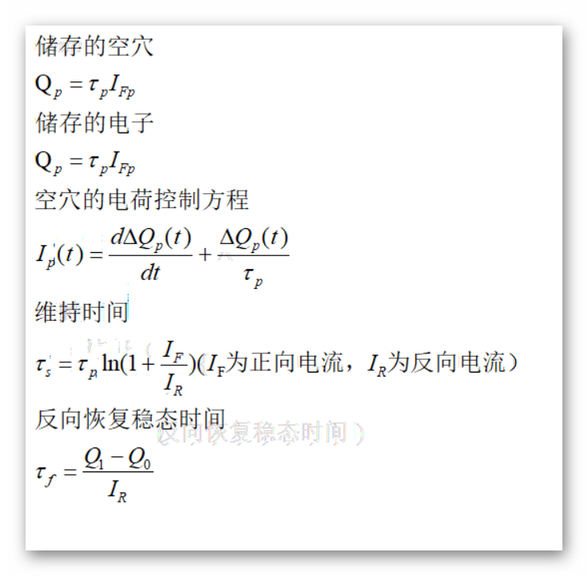
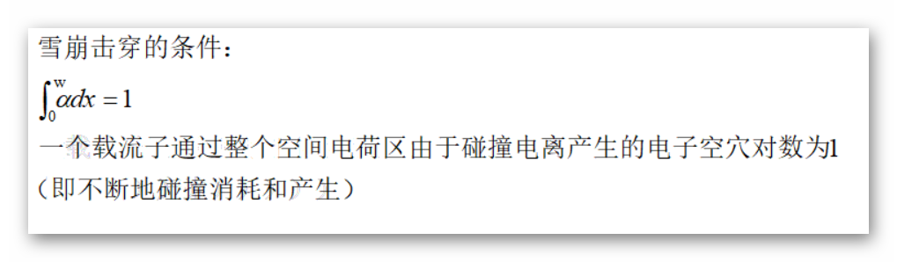

| 半导体器件 | |
目录： 第一节--半导体基础 第二节--二极管 第三节--晶体管 第四节--MOS电容 第五节--MOS管 第六节--纳米器件 第七节--结型场效应管 返回页： 总结页 |
PN结及二极管 1、PN结的能带图  2、基于能带图的计算 ψfp就是P区的电势差， ψfn就是N区的电势差。从能带相对于本征能级的位置可以看到 ψfp>0,ψfn<0.（就是用本征能级对应的费米能级） 由泊松方程一阶积分即可得到电场的表达式； 由泊松方程二阶积分得到电势表达式； 其中由Em的边界条件得到了xp和xn的关系； 所以可以用Vbi和掺杂浓度表示耗尽区的宽度。  3、结果说明 这次主要考虑到第一次使用能带图，就将能带图和电场和耗尽区的宽度推导一下， 以后就不会去做这个方面的工作。以后就不会做这种工作了，这次将其作为范例一下 讲完。 4、流程说明 从上面的推导过程中可以看出： 能带图实际上就是电子的势能分布，以本征能级为基准，构建出电势的分布。结合 电荷的分布即可完整的得到实际的分布模型。 5、结电容 结电容等于介电常数除以耗尽区的宽度。 6、直流特性 根据载流子的输运方程可知，要想得到电流首先得得到载流子的分布，这里引入了准中 性区连续性方程和耗尽区的边界的电子浓度得到了IV方程。后面可以根据长短的PN结得 到实际的近似方程。有点类似于载流子的输运方程。但在实际的PN结模型中，使用e指数代 替即可。 必记公式：  ￥大注入就是准中性区少子太多导致准中性区需要形成自建电场来平衡 ￥串联电阻就是在电流过大时电阻成为主要影响因素 7、 小信号特性 根据连续性方程和小信号特性可以得到准确的表达式，但在实际IDE运算过程中只需记住 等效的小信号电路即可。 8、电荷存储及开关特性 由于结电容的存在，电荷会在电容上积累。转向反向偏置时会有一个电荷释放时间，这使得 在电压反向后电流会有延时改变。  9、PN结的击穿特性 击穿，即反向截止特性由于某些原因被破坏。 齐纳击穿：当电子和空穴的碰撞电离对的数目等于1时，PN结击穿。 穿通击穿：当PN结在空间电荷区不再拓展（由于某些器件的特殊结构）导致最大电压 低于电荷区可以展宽时的电压就击穿的击穿形式。  10、异质PN结 异质结的能带图就是将带宽展宽（一般是P）而后得到的PN结，具体的作用在后面的晶体管中 有具体的应用，这里就不多说。 11、温敏特性 半导体的电学性质与温度息息相关，某些特定的半导体PN结可以对温度极度的敏感 |